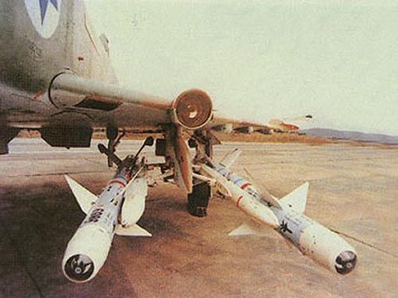
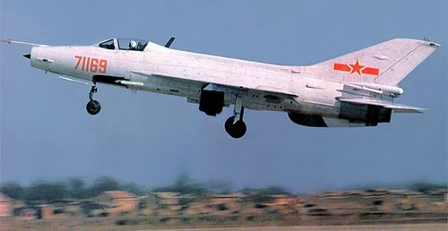

长空霹雳—霹雳8近距空空导弹
文章来自网易军事，原链接：https://www.163.com/war/article/5IA8VHPT00011232.html
研制背景
在当年争夺东南沿海制空权的空战中，国民党空军首次使用美国的提供的AIM-9响尾蛇空空导弹，有数枚没有爆炸坠落在大陆沿海地区，有关部门利用缴获的这些残骸开始仿制自己的空空导弹，但由于技术薄弱，未能取得实质的进展。前苏联知道我国相关研究后，向我国索取部分实物，并在此基础上研制了R-13空空导弹（北约编号AA-2 环礁），1962年我国从前苏联引进了米格-21F-13型歼击机及配套的R-13型空空导弹，并将前者赋予编号62式歼击机，后来改名为歼-7，后者则命名为霹雳-2型空空导弹。
这是我国第一种红外制导空空导弹，在此之前，1958年我国已经从前苏联引进了R-5型空空导弹，命名为霹雳-1空空导弹，由于采用了雷达驾束制导方式，性能较低，在霹雳-2型引进之后就被替代。尽管霹雳-2的研制比较顺利，1967年后就完成了各种状态下的试射试验，但由于文革的干扰，到1970年才被批准定型投产，并且直到上世纪90年代仍旧是我国空空导弹武器的主力。
60年代中叶，我国开始研制歼-8型高空高速歼击机，根据霹雳-2相关性能不足的缺点，我国在其基础上研制了霹雳-3型空空导弹。与霹雳-2型相比，其增大了导引头作用距离，改善了对目标的截获和跟踪距离，增大了升力面积，从而提高了制导精度，增加了升力面积，提高了平衡攻角，改善高空空气稀薄条件下的作战能力。此外还改进了战斗部威力，以增加对高速目标的攻击能力。
1966年首批霹雳-3导弹完成试制，1969年开始进行试射，但由于引信不可靠等问题到1974年才在歼-7型歼击机上试射取得成功。1979年由歼-8型歼击机进行单、双发试验也圆满成功，同年国家批准霹雳-3型空空导弹设计定型。不过由于该导弹已经明显落后，已经没有批量生产的价值，所以我国继续研制比其先进的霹雳-5乙型空空导弹，并利用其技术来改进霹雳-2型空空导弹。形成80年代我国空军的主要机载武器系列。
霹雳-5乙型空空导弹
霹雳-5是我国研制的第二代空空导弹武器系统，该导弹主要为歼-9型飞机配套，主要攻击对象是美制F-4型战斗机。值得一提的是我国在研制霹雳-5的时候首次采用了一杆双弹的设计思想，即在一种弹体上同时采用半主动雷达制导-霹雳-5甲（后来停止研制）和红外制导方式-霹雳-5乙，以便同时用两种不同制导体制的导弹攻击目标，提高目标的成功率。1966年霹雳-5乙组装出首批样弹，并进行了地面和空中发射试验，但文革的干扰和技术上的问题，霹雳-5乙到1986年才完成设计定型。
该导弹由控制舱，破片式杀伤战斗部、引信系统，固体火箭发动和翼尖装有陀螺的四个翼面组件组成。霹霹-5乙导弹配有两种引信——红外线引信和无线电引信，前者配备杀伤破片式战斗部，后者为连续杆型，与霹霹-2相比，霹雳-5采用压缩空气冷却制导头替代了霹雳-2的电热制冷，器件仍旧为硫化铅，其设计指标为对F-4型战斗机（高度1万5千米） 截获距离为15公里。
由于霹雳-5乙的拖延，70年代后期我国对霹雳-2进行了改进，研制成为歼-8甲型全天候歼击机配套的霹雳-2乙空空导弹。主要改进导引头，采用半导体致冷琉化铅探测器，光学系统采用了场镜和浸没透镜，提高了探测距离、跟踪角速度和抗太阳干扰能力，同时改进了红外近炸引信和采用了P L -5乙导弹的翼面陀螺舵。改型解决了P L -2导弹存在抗太阳干扰能力差和引信早炸两大关键问题并进一步提高其它战术技术指际。
在我国研制霹雳-5乙的时候，国际第三代近距导弹已经开始实用，比较典型的就是美国的AIM-9L空空导弹，其特点采用了敏感度更高的锑化铟器件。另外其采用了发射架内的氮气冷却，发射后采用弹上的氩气瓶继续制冷，增加了导引头的工作距离，由于导引头性能的提高，AIM-9L具备全向攻击能力，并且可以采用随动模式。随动模式即由雷达搜索到目标后，火控计算机将雷达位置换算为坐标器的坐标位置，并随动雷达位置，从而扩大了导弹的攻击范围。
另外其还采用了激光近炸引信，这种引信更能适应格斗的要求，能更精确地控制炸点并且难以干扰，AIM-9L在实战中显现了其较大的威力，有资料指在实战曾经发射27枚，有24枚命中目标。根据世界空空导弹的发展潮流，我国有关部门在70年代也开展了相当于AIM-9L的空空导弹——霹雳-6的研制，但由于在红外器件等关键技术短时间难以攻克，所以霹雳-6最后无疾而终。
引进外援
80年代，我国空军以前苏联米格-23战斗机为目标研制歼-8B型战斗机，该机的重点是改善中低空格斗性能，因此需要一种性能较好的空空导弹与之相配合，同时该导弹还可以用来改进现役战斗机，以对付机动性能提高后的米格-23型歼击机如米格-23MLD。然而霹雳-5乙的拖延、霹雳-6的下马表明，我国想完全依靠自己的力量研制这样的空空导弹还力不从心。因此中国利用当时有利的国际环境，引进技术，以降低研制新型空空导弹的难度显然是一种可能的选择。
经过对比，我国选择了以色列的怪蛇-3空空导弹，该导弹是由以色列拉斐尔设计局研制。1958年以色列开始研制第一代空空导弹谢里夫-1型，其性能相当于AIM-9B，1963年研制成功，但由于应该导弹抗干扰能力差，攻击能力也不强，所以1962年，以色列又开始研制其改进型谢里夫-2，其相当于AIM-9D。该导弹采用较为先进的比例制导方式，对付机动目标的性能较好，经过实战表明谢里夫-2的性能完全可以与AIM-9D相当。尽管其重量和价格都高于AIM-9D，以色列空军为支持国产武器的装备发展，仍旧批量采购了谢里夫-2导弹。根据谢里夫-1/2的实战经验，拉斐尔设计局开始研制新型空空导弹，最初命名为谢里夫-3，后来改名为怪蛇-3空空导弹。该弹于1975年开始设计，1977年开始工程研制，1981年首次在巴黎航展上公开亮相，并且参加了1982年的贝卡谷地空战，在空战中痛击当时我国主要作战对象米格-23，这也是我国决定引进此型导弹的重要原因。
怪蛇-3分为前舱段和后舱段，前舱段包括导引头、引信和氮气瓶及电子组件组成，后舱段包括战斗部、火箭发动机等。怪蛇-3采用三角形鸭式舵面，为单翼可动式，尾翼为独特的带陀螺舵的梯形截角尾翼，保证了导弹横滚的稳定性，这也是怪蛇-3的重要识别特征。怪蛇-3采用液氮冷却的锑化铟红外导引头，采用比例导引法，弹体的液氮瓶可以使用2个小时以上，这样大大提高了导引头的性能和抗干扰能力。怪蛇-3采用无线电近炸引信，其利用导弹飞越目标时的多普勒频率信号引爆导弹，抗干扰能力较强。与以往的近距空空导弹相比，怪蛇-3具备较好的机动性能，最大机动过载可以达到40g，具备30度的离轴截获能力。导弹最大射程为15公里，最小射程为500米，其适应范围较广，不便可以攻击高空目标，还可以攻击低空目标。

霹雳8型空空导弹
怪蛇-3空空导弹总体性能优于美国的AIM-9L空空导弹，所以我国不但大量采购怪蛇-3，还引进了技术自行生产，编号为霹雳-8。根据报道怪蛇-3的国产化工作由我国洛阳光电发展中心完成，在90年代初完成国产化导弹的试制，并批量装备部队。该导弹的引进不但缩短了我国空战兵器与国外的差距，亦为以后的发展打下了坚实的基础，特别是关键的锑化铟器件的国产化。该器件具备灵敏度高等优点，是中波段红外器件中应用较广的一种，不单是在制导方面，在热成像等领域也有较好的应用前景。
进入90年代随着歼10型歼击机研制的深入，需要配套的武器装备。另外我国在引进苏-27型歼击机的同时也大量引进了R-73型空空导弹，为避免对国外空空导弹的过分依赖，我国结合霹雳-8的使用经验对其进行了改进，以做为新机的配套。其中比较成功的改进就是多元红外制导替代了原来的单元红外制导系统。所谓多元红外制导就是将4个探测器阵列以线型或者矩形的方式安装，借助扫描对光能进行调制，其优点是不但可以实现全波探测，还可以大面积消除背景的干扰，特别是可以消除红外干扰机、红外干扰弹的干扰信号。就其技术水平来说已经优于进口的R-73空空导弹采用的双元红外探测器阵列。目前改进后的霹雳-8不但做为歼-10的近距空战武器，也已经整合到歼-11型飞机上面去，成为新型空空导弹服役前重要的过渡武器。

存在不足
霹雳-8虽然性能较好，但也有自己的缺点，那就是重量较大，其重量达到120公斤，不但远远高于AIM-9L的90公斤，也高于R-73的105公斤，可以说是现役最重的近距空空导弹，衍生的问题就是载机适应能力较差。我国在引进怪蛇-3之初进行载机测试时，就感觉歼-7重量偏轻，挂上导弹后，重心后移，发射时冲击力大，飞行员难以控制，因此当时批量生产的歼7II型飞机实际上难以挂载此型霹雳-8。
这之后出现的第一种可以挂载此型导弹居然是歼-7的对地攻击型号——歼-7H。歼-7H加固了机翼，并且在机头增加100多公斤的配重才解决重心后移的问题。虽然问题得到了解决，但也付出了歼击机性能下降的代价，给人得不偿失的感觉。这样霹雳-8在诞生之初似乎就处于一个尴尬的境地：能够挂载的歼-8B因为机载雷达及火控系统的原因，还未能大量生产，而批量生产的歼7II系列却不能挂载。
因此为解决歼-7挂载霹雳-8的问题，成都飞机公司和西北工业大学合作，研制成功了歼-7E型飞机。其最大的特点就是用双三角翼替代原来的三角翼，从而解决了歼-7系列挂载霹雳-8需要机头配重的问题，并且双三角翼的带来的提高升力系数、增加机翼面积等优点也提高了歼-7系列的机动性能，因此该机是歼-7系列中比较成功的改进型号。不过歼-7E只是解决了能否挂载霹雳-8导弹的问题，由于歼-7系列空间有限，在当时的技术条件下只能采用较为简单的测距雷达，缺乏具备搜索能力的PD雷达和头盔瞄准具，因此难以支持霹雳-8先进的攻击模式如发射后锁定、离轴发射、随动发射等，所以对于歼-7E来说，霹雳-8只是一枚增加攻击距离的霹雳-5，这对于导弹本身来说无疑是一种浪费，在本世纪初配备有神鹰-80小型PD雷达和头盔瞄准具及数据链的歼-7G型飞机服役，才真正充分发挥出霹雳-8的作战能力。

霹雳-9和霹雳-5E-2型空空导弹
除了重量因素外，霹雳-8的血统也令其处境尴尬。众所周知，我国传统的军火出口市场包括巴基斯坦及部分阿拉伯空军，对于这此国家来说是无论如何都不会接受一样有犹太血统的武器的，这样我国向这些国家出口歼击机的时候，就会面临可以出口的霹雳-5乙别客户看不上，性能较好的霹雳-8客户又不愿意采购的困境。如果配套国外的机载武器，不但会增加国产歼击机的采购成本，让部分利润流失，还会造成对国外武器装备的依赖。
由于以上种种原因，我国在霹雳-8的基础上研制了霹雳-9型系列空空导弹，该导弹实际上利用霹雳-8的技术，采用了双三角翼及矩形尾翼研制而成的，主要用于出口。其中霹雳-9C型采用了多元红外制导和数字技术，不但用于国产歼击机的配套，还发展了地空导弹型号，为国产空空导弹的系列化发展积累了经验。不过霹雳-9和霹雳-8一样，重量和价格都偏高，因此着眼为部队大量装备及出口的歼-7B配套，我国将霹雳-8的技术如锑化铟器件移植到霹雳-5乙技术上面，研制成功霹雳-5E空空导弹。其性能已经可以和美国的AIM-9L相比，为歼-7B系列提供了升级换代的武器。进入新世纪随着JF-17飞机的量产，我国在霹雳-5E的基础上为其研制了霹雳-5E-2型空空导弹作为配套武器装备，其采用了双元双色红外导引头、激光近炸引信等先进技术，提高了整体性能，不便可以用于出口，亦可以用于部队现役二代歼击机的配套。
结语
进入新世纪随着技术进步，新型战机升力系数和翼荷载都得以大幅降低，因此为采用瞬盘战术打下了技术基础。瞬盘可以让战机得到更大盘旋角度，可以迅速将机头指向目标，如我们经常听到的歼十型战机在与苏-27SK对抗中，可以率先锁定目标，但由于瞬盘，推力低于阻力，战机能量消耗较大。战机在格斗过程中为减少能量的消耗，需要更先进的武器能将目标尽快纳入攻击范围，这也是为什么进入新世纪后会出现先进近距空空导弹发展的热潮。
增加导弹攻击范围显然需要更灵敏的热成像器件及推力矢量等先进技术，这些同时也构成了新世纪近距空空导弹的特征。相比之下霹雳-8就有点相形见拙了，所以尽管歼十机动性能较好，但霹雳-8的性能并不能足以支持这种性能的发挥。因此我国空军需要一种新型武器来支持新型战斗机的新战术及战法。